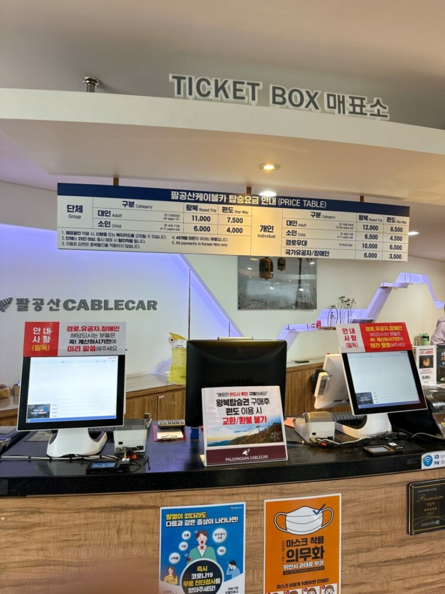

▲ 케이블카
▲케이블카 탑승 가격
대구 방면에서 오려면 팔공산IC를 통해 나가야 하며, 경산 방면으로 가려면 청통와촌IC를 통해 나가야 한다. 또한, 팔공산으로 가는 케이블카가 따로 있다.
|
|
 |
▲ 케이블카 |
▲케이블카 탑승 가격 |
케이블카 탑승 왕복 비용은 성인기준 12000원이다. 6개월 내에 한번 더 방문시 20%할인혜택도 있다고 한다.
참고로, 팔공산 갓바위는 따로 케이블카가 없어, 경산쪽이나 대구쪽으로 올라가는 길이 따로 있다. 대구쪽으로 올라가는 길은 갓바위까지 2km, 왕복 2시간 30분 정도 소요된다.